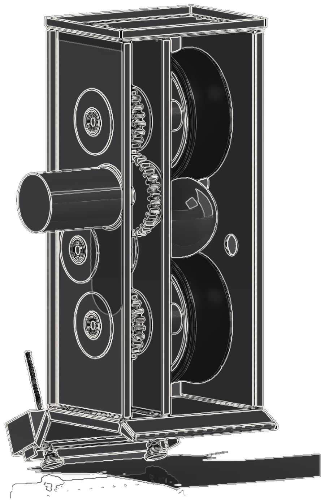
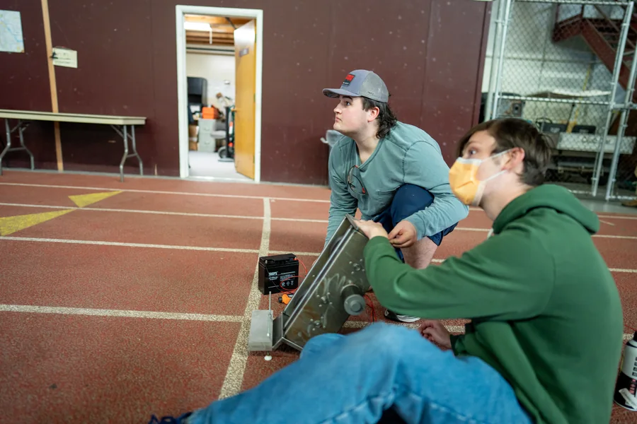
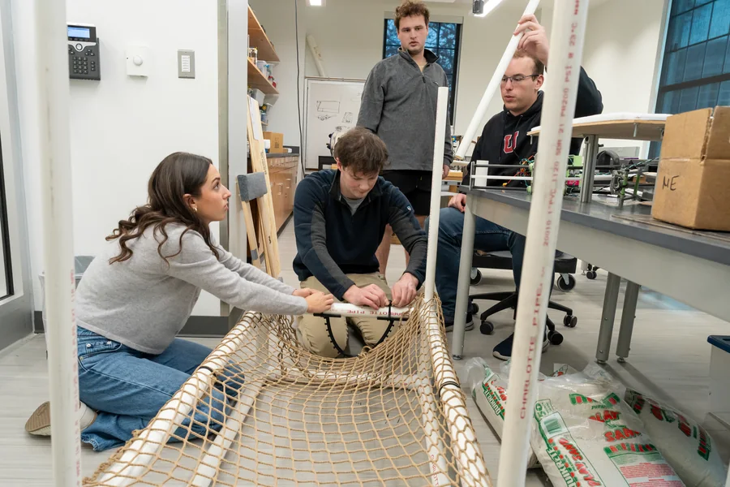
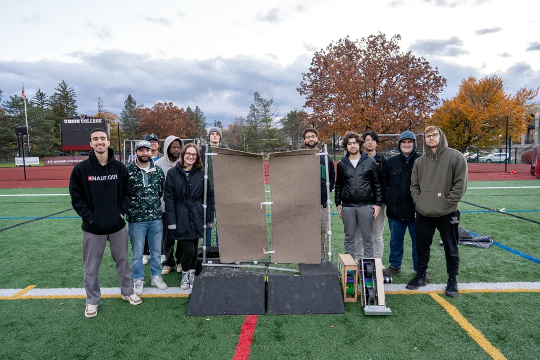

Robo-Catcher: a softball machine that catches and throws back
Pitching machines are everywhere. Machines that catch the ball and return it do not exist, so our twelve-person capstone team built one for under $700. I co-led the four-person feeding subsystem, and when it became clear nobody had claimed the electronics for the rest of the robot, I took over every wire in it.
| Role | Feeding co-lead, then all electronics and firmware | Team | 12, across capture, feeding and return |
|---|---|---|---|
| Tools | ESP32 . C++ . MATLAB . NEMA 17 + TB6600 . SolidWorks . laser-cut HDF . 3D printing | Timeline | 2025 . two academic terms |
| Result | 100% feed-indexing success on competition day | Status | Delivered |
The problem
A solo player can buy a machine that pitches, but someone still has to walk every ball back. We set out to close the loop: a machine that catches an incoming throw, feeds it internally, and returns it, with no human in the middle. Off-the-shelf solutions do not exist at any price; ours had to come in under a $700 budget.
Catching is the easy half. A net absorbs the ball and gravity delivers it somewhere predictable. Feeding is the subsystem that decides whether the whole machine works, because the ball has to move from wherever it landed into a thrower that is already spinning, one at a time, without jamming.
Constraints
- Total build cost under $700, every actuator and driver chosen with cost in mind
- Portable by one person: 55 lb, fits in a car trunk, assembles at the field with no tools
- Battery powered: a full practice session on one 12 V 20 Ah SLA battery
- Safe around players: wireless emergency stop and hardware cut-offs required
The mechanism I owned
The feeder is a rotating drum carrying two pockets, 180 degrees apart. One pocket sits under the collection funnel and loads while the other sits over the thrower throat and discharges. Half a turn swaps them. Because loading and discharging happen at the same time in different places, the machine never waits on itself, and there is no state in which a second ball can enter an occupied pocket.
The failure mode that kills machines like this is a stall mid-rotation, so before any parts were made I modelled the load case in MATLAB (a 0.19 kg ball lifted through 180 degrees) and sized the NEMA 17 stepper and TB6600 driver to a 1.8x torque safety factor. The motor selection was an argument, not a guess.
As built


Electronics and firmware
Everything runs on one ESP32: PWM speed control for the 120 W return flywheel through a MOSFET stage, stepper indexing for the feeder, and limit-switch logic so the firmware knows the drum's real position rather than its commanded one. A wireless remote gives start and stop from across the field.
The emergency stop is hardware, not software, on purpose. A machine that throws a softball at a person should not rely on a microcontroller having survived in order to stop.




The result

Our professor described the electronics choices as "uncommonly sophisticated for this course", and noted the team had built both the simplest feeder and the most accurate return thrower of the two class teams.
What I learned
The MATLAB torque study felt slow while teammates were already printing parts, and then the feeder ran a full competition day without a single missed index. Analysis before fabrication is cheaper than iteration after it. If I built it again I would close the loop on flywheel RPM, so return speed stays constant as the battery sags, and I would instrument the thrower throat so exit velocity is measured rather than tuned by feel.